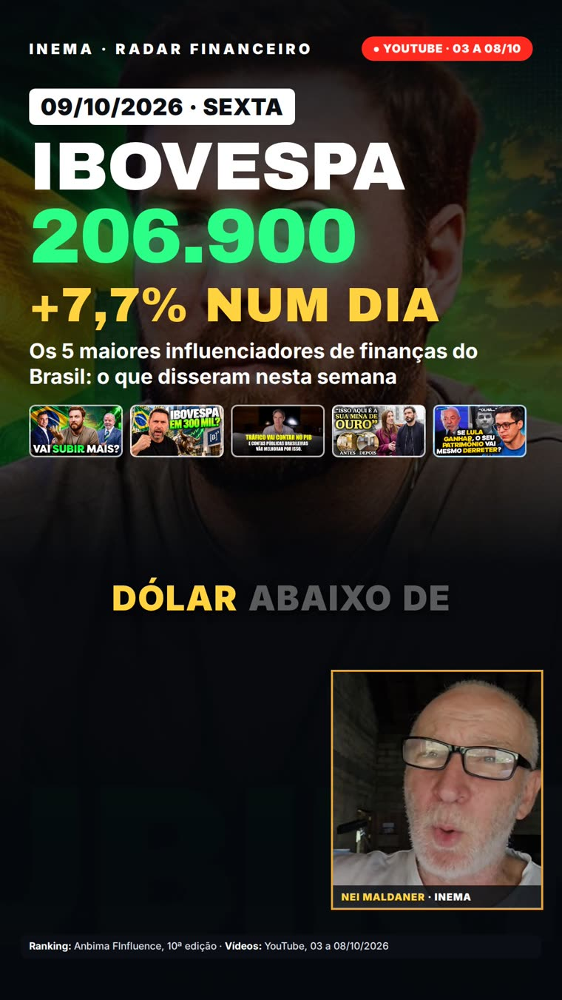

Os 5 maiores influenciadores de finanças do Brasil, transcritos, conferidos e resumidos num vídeo com números grandes, a fonte na tela e o Nei comentando.
O finviral é um sistema que faz, sozinho, vídeos curtos (9:16) sobre o que os maiores influenciadores de finanças do Brasil disseram nos vídeos deles. Ele assiste aos vídeos do YouTube por transcrição, separa os números, os fatos e as polêmicas, e monta um vídeo com números grandes animados, a fonte de cada dado na tela e o Nei comentando (avatar). Serve para quem quer acompanhar o mercado em um minuto, sem recomendação de investimento. Roda num computador com GPU, com a assinatura do Claude Code e do HeyGen.
Toda madrugada o finviral lê o que os canais publicaram, confere cada número contra a transcrição e entrega um vídeo pronto para o Nei aprovar. Não é recomendação de investimento: o vídeo relata o que cada um disse, sempre com a fonte.
Cada número precisa estar na transcrição, com o trecho literal. Canal, data e título aparecem na tela em toda cena. O vídeo diz que não é recomendação de investimento.
Contadores, gráfico, carimbo de polêmica, legenda palavra a palavra e o avatar do Nei no canto, renderizados quadro a quadro.
Roteiro com o claude -p (assinatura, sem API), transcrição local com Whisper e avatar pelo estúdio do HeyGen. A oferta de troca de plano do HeyGen é sempre recusada.
Seis etapas encadeadas pelo auto/rodar.sh. Se a conferência reprovar duas vezes, o vídeo não é feito.
Lista os vídeos dos canais de canais.json (só metadados, yt-dlp), baixa o áudio e transcreve localmente (inemavox, Whisper large-v3).
O claude -p lê as transcrições e grava base.md (cada número, quem disse, o vídeo e o trecho literal), roteiro.json (falas e visuais) e legenda.txt (texto para aprovação).
O auto/checar.py confere se cada trecho está na transcrição, se os números da fala estão por extenso, se as imagens existem, se há CTA e o aviso "não é recomendação". Reprovou: volta uma vez para correção.
O HeyGen gera o avatar do Nei pelo estúdio (assinatura, sem API de geração). O motor/retempo.py alinha a arte à fala. Se o HeyGen falhar, sai a versão com a foto e a voz do Nei (Chatterbox).
O motor/palco.html é renderizado quadro a quadro pelo Playwright, com a fonte em toda cena. O avatar fica no canto, com trilha.
O vídeo vai para o bot v3 no Telegram. O Nei aprova e publica. O bot sempre recebe o vídeo, "sem pauta" ou "falhou em X".
Timers do systemd de usuário. Dia fraco não vira vídeo: o bot recebe "sem pauta".
diario · 40–60 sO que eles publicaram ontem e anteontem: uma história principal e no máximo mais um ou dois números.semanal · 90 s a 2 minBalanço da semana: o maior número, a polêmica e um número de cada influenciador relevante.domingo · ~90 sO que eles esperam para a semana que vem: apostas, datas e riscos que eles apontaram, sempre atribuídos.Um computador com GPU, o Claude Code logado na assinatura e o perfil do HeyGen do explicavideos.
yt-dlp para listar e baixar, inemavox (~/projetos/inemavox) para transcrever e cardshorts para a voz Chatterbox nei.
Node com Playwright (motor/node_modules é um link para o do eventosextremospub) e ffmpeg.
claude (Claude Code logado na assinatura), Xvfb :99 com o perfil do HeyGen do explicavideos e o bot v3 (refazvideo/ferramentas/enviar_bot_v3.mjs).
Comandos reais do repositório, executados na raiz do projeto.
A lista fica em canais.json. Hoje são os 5 primeiros do ranking Anbima FInfluence (10ª edição): Bruno Perini, Economista Sincero, Ricardo Amorim, O Primo Rico e Os Economistas. Para pausar alguém sem apagar, use "ativo": false.
{"handle": "@BrunoPerini", "nome": "Bruno Perini", "rk": "Nº 1 · ANBIMA", "ativo": true}
Se aparecer em destaque outro nome consolidado e confiável, o sistema sugere a inclusão na mensagem do bot. Nome emergente nunca entra, e a inclusão só acontece com o ok do Nei.
Copie as unidades do systemd de usuário e ative os três timers.
cp systemd/finviral-* ~/.config/systemd/user/ && systemctl --user daemon-reload systemctl --user enable --now finviral-diario.timer finviral-semanal.timer finviral-domingo.timer systemctl --user list-timers 'finviral-*'
Rode uma rodada sem o HeyGen e sem mandar para o bot.
SEM_AVATAR=1 SEM_BOT=1 auto/rodar.sh semanal # teste: sem HeyGen e sem enviar
Passe o modo e a data; para pular, acrescente a linha em auto/pular.txt.
auto/rodar.sh diario 2026-10-09 # rodada de um dia específico echo "2026-10-17 diario" >> auto/pular.txt # pular uma rodada
Para uma edição como edicoes/2026-10-09-semana: primeiro a versão com a voz do Nei e a foto, depois a versão com o avatar.
E=edicoes/<data>-<slug> python3 motor/narrar.py $E 1.12 && python3 motor/gerar_cena.py $E && motor/montar.sh $E $E/video.mp4 # voz do Nei + foto motor/avatar_heygen.sh $E FINVIRAL-<titulo> && python3 motor/gerar_cena.py $E --avatar && motor/compor_avatar.sh $E $E/video.mp4 # avatar
O vídeo chega no bot v3 com o texto para aprovação. O Nei aprova e publica; nada vai ao ar sozinho.
O portão de conferência e o roteiro seguem estas regras.
Data dd/mm/aaaa e o número mais forte logo no primeiro quadro.
Só entra número que está na transcrição, com canal, data e título na tela. Não é recomendação de investimento.
Eleição e política: o vídeo relata o que cada um disse, sempre atribuído.
Fala no tom do Nei ("tu"), com números e anos por extenso.
Gancho de comentário e CTA de gestão de agentes de IA no inema.club.
Só pelo estúdio da assinatura. A oferta de troca de plano é sempre recusada.
Dois quadros do vídeo da edição edicoes/2026-10-09-semana, com o avatar do Nei no canto.
